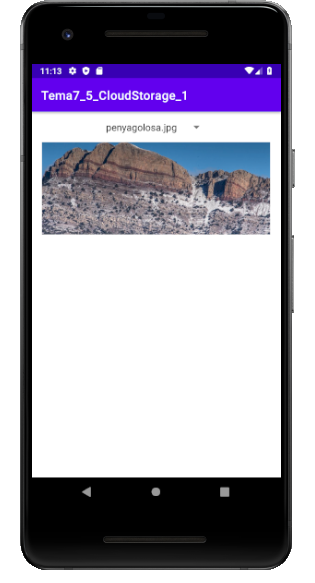

Bases de Dades
5.3.3 CS-Android: Tot l'exemple
Igual que en el cas d'IntelliJ, anem a ajuntar tot l'exemple que visualitza una imatge guardada en Cloud Storage, modificant-lo un poc: ens guardarem els noms de les imatges en un Spinner.
Podeu fer-lo sobre el mateix projecte, per a no haver de fer el procés de connexió una altra vegada. Però si preferiu fer-lo sobre un altre projecte li podríeu posar el nom de Tema7_Firebase_CS_2
Substituirem el EditText i el Button per un Spinner. El activity_main.xml ens quedarà:
<?xml version="1.0" encoding="utf-8"?>
<androidx.constraintlayout.widget.ConstraintLayout xmlns:android="http://schemas.android.com/apk/res/android"
xmlns:app="http://schemas.android.com/apk/res-auto"
xmlns:tools="http://schemas.android.com/tools"
android:layout_width="match_parent"
android:layout_height="match_parent"
tools:context=".MainActivity">
<Spinner
android:id="@+id/nom"
android:layout_width="wrap_content"
android:layout_height="50dp"
app:layout_constraintStart_toStartOf="parent"
app:layout_constraintEnd_toEndOf="parent"
app:layout_constraintTop_toTopOf="parent" />
<ImageView
android:id="@+id/imatge"
android:layout_width="wrap_content"
android:layout_height="wrap_content"
app:layout_constraintEnd_toEndOf="parent"
app:layout_constraintStart_toStartOf="parent"
app:layout_constraintTop_toBottomOf="@+id/nom"
tools:srcCompat="@tools:sample/backgrounds/scenic" />
</androidx.constraintlayout.widget.ConstraintLayout>
Primer agafem la llista de noms de fitxers i la posem al Spinner.
Després en el Listener del Spinner agafem el contingut del fitxer. Estan posades les dues maneres, amb getFile() i amb getBytes(), una d'elles comentada
import android.graphics.BitmapFactory
import android.os.Bundle
import android.view.View
import android.widget.AdapterView
import android.widget.ArrayAdapter
import androidx.appcompat.app.AppCompatActivity
import com.google.android.gms.tasks.OnFailureListener
import com.google.android.gms.tasks.OnSuccessListener
import com.google.firebase.storage.FileDownloadTask
import com.google.firebase.storage.FirebaseStorage
import kotlinx.android.synthetic.main.activity_main.*
import java.io.File
class MainActivity : AppCompatActivity() {
override fun onCreate(savedInstanceState: Bundle?) {
super.onCreate(savedInstanceState)
setContentView(R.layout.activity_main)
val mStorageRef = FirebaseStorage.getInstance().getReference()
mStorageRef.listAll().addOnSuccessListener {
val opcions = ArrayList<String>()
for (f in it.items) {
opcions.add(f.name)
}
val adaptador = ArrayAdapter(this, android.R.layout.simple_spinner_item, opcions)
adaptador.setDropDownViewResource(android.R.layout.simple_spinner_dropdown_item)
nom.adapter = adaptador
}
// Amb getFile()
nom.onItemSelectedListener = object: AdapterView.OnItemSelectedListener {
override fun onItemSelected(arg0:AdapterView<*>, arg1: View, arg2:Int, arg3:Long) {
val imgRef = mStorageRef.child(nom.selectedItem.toString())
val localFile = File.createTempFile("images", "jpg")
imgRef.getFile(localFile)
.addOnSuccessListener(OnSuccessListener<FileDownloadTask.TaskSnapshot?> {
// Successfully downloaded data to local file
val bm = BitmapFactory.decodeFile(localFile.getAbsolutePath())
imatge.setImageBitmap(bm)
}).addOnFailureListener(OnFailureListener {
// Handle failed download
// ...
})
}
override fun onNothingSelected(arg0:AdapterView<*>) {
// TODO Auto-generated method stub
}
}
// Amb getBytes()
/*
nom.onItemSelectedListener = object: AdapterView.OnItemSelectedListener {
override fun onItemSelected(arg0:AdapterView<*>, arg1: View, arg2:Int, arg3:Long) {
val imgRef = mStorageRef.child(nom.selectedItem.toString())
val localFile = File.createTempFile("images", "jpg")
imgRef.getBytes(500000)
.addOnSuccessListener(OnSuccessListener<ByteArray?> {
// Successfully downloaded data to local file
val bm = BitmapFactory.decodeByteArray(it, 0, it!!.size)
imatge.setImageBitmap(bm)
}).addOnFailureListener(OnFailureListener {
// Handle failed download
// ...
})
}
override fun onNothingSelected(arg0:AdapterView<*>) {
// TODO Auto-generated method stub
}
}
*/
}
}
I aquest és el resultat:
